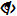
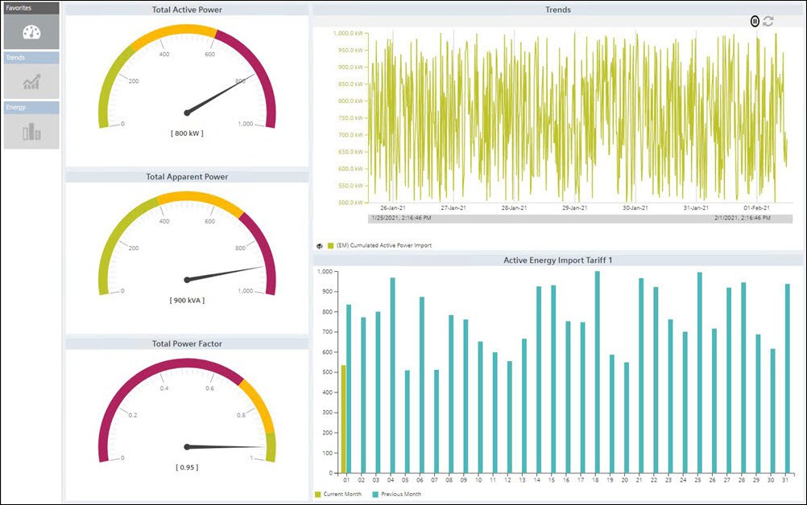
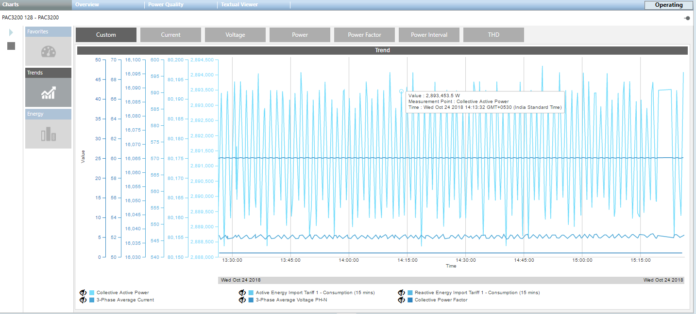
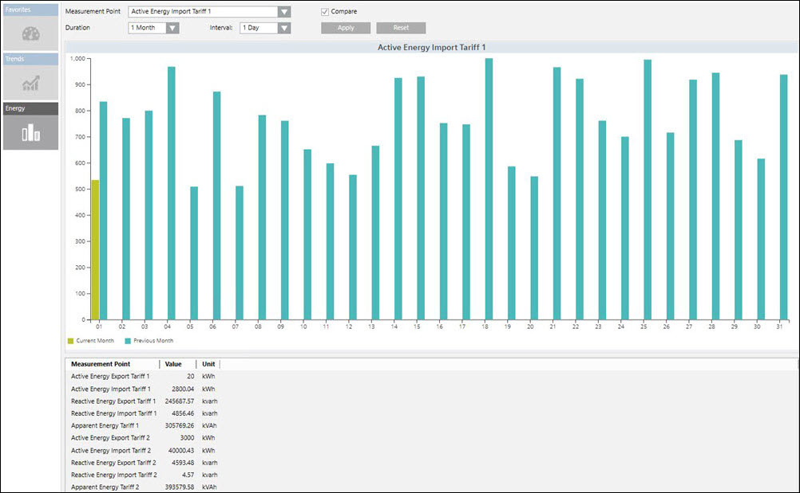
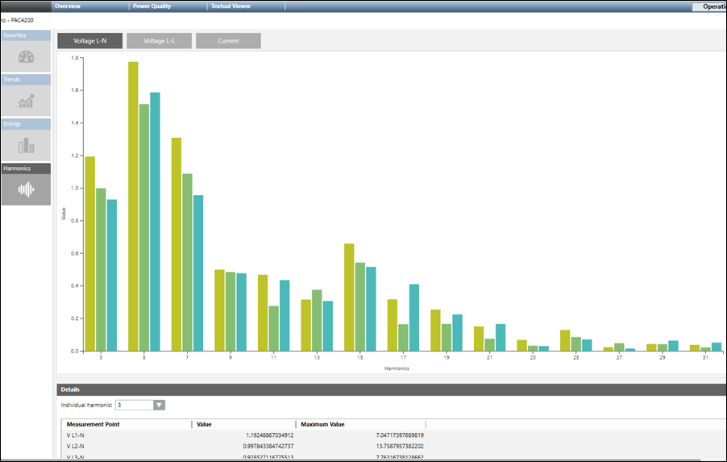

Charts Tab
The Charts tab contains the following tiles:
- Favorites: (default selection): Displays the control such as gauges and trends associated with their configured measurement points. There are three gauges that display the values of the configured measurement points.
- The gauges display measurement point descriptions, color range and values along with the units.
- The Trend control represents the variations in the values of a device over a specific time range. A trend can contain any number of hierarchically arranged areas for representing curves, with scales and legends. Trend view allows for a visual comparison of individual trends.
- The bar chart section displays the configured measurement point with a month as the default interval.
- Trends: When you click the Trends tile, it displays the live trend series for the measurement points that are configured.
It has options to start and stop the live trend when you click Start .
.
It also has options to show or hide the data points associated with the trend when you click the
toggle icon.
Additionally, you can zoom the data in the trend chart by hovering over the trend and scrolling.
You can also change time duration the trend using the range selector option at the bottom of the trend.
You can view the trend information for any of the following parameters: - Custom: You can view the live trends of the measurement points that are already configured.
- Voltage: You can view two sets of trends under this tab. The trends in 3-phase-to-phase-voltages and the average-phase-to-phase voltage is the first set. The second set of trends is 3-phase-to-neutral voltages and average-phase-to-neutral voltage.
- Current: Displays the trends in 3-phase currents and average current.
- Power: Displays the total active power and reactive power trends.
- Power Internal: Displays the trends of cumulated active power import and the cumulated reactive power import.
- Power Factor: Displays the trend of the total power factor.
- THD: Displays trends of current and voltage.
- Energy: When you click the Energy tile, it displays the energy consumption details. It also enables you to compare the energy consumption between 2 different time ranges. It consists of the following fields:
- Measurement Point: Displays the already configured measurement points. Active Energy import tariff 1, 1 hour and 15 minutes are the default values. Also, the Compare checkbox is unchecked by default. You can select any of these points to display the trend series for the point.
- Duration: Displays the bar chart for the selected duration.
- Interval: Displays the bar chart according to the selected interval for the duration selected.
- Compare: Allows you to compare data according to the specified duration.
- Apply: Click to reflect the changes in the trend chart.
- Reset: Resets the selected values.



- Harmonics: Allows you to view the harmonic values in a bar chart depending on the following selection:
- Voltage L-N: Displays the line-to-neutral voltage harmonics.
- Voltage L-L: Displays the line-to-line voltage harmonics.
- Current: Displays the current harmonics.
- Individual Harmonics: Select a harmonic to view its detailed values (including time stamp). The bar chart shows the harmonic proportions related to the basic oscillation up to the 64th harmonic. By default, you see the instantaneous values of the harmonics.
